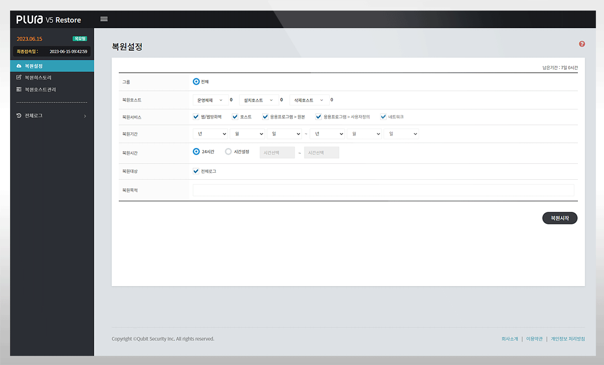
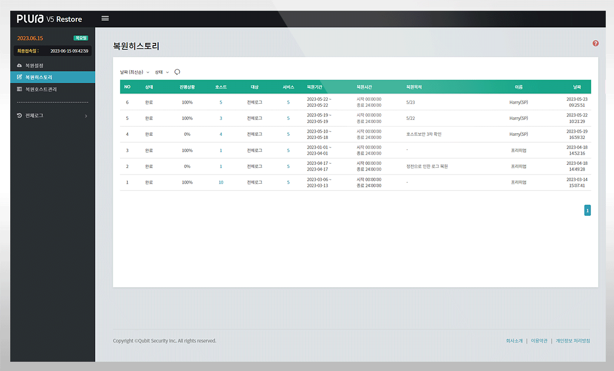

PLATFORM ♡
Log Data Backup
데이터 백업 (Backup)
로그 관리의 핵심은 감사정책을 활용하여 과거 로그를 보관하고 필요 시 복원하는 것입니다.
감사 정책이 없다면 로그에 의미 있는 데이터는 없습니다.
PLURA는 감사정책을 사용하여 로그를 생성, 분석하여 이상징후를 탐지합니다.
감사정책이 포함된 모든 로그를 업로드 즉시 장기 저장하며, Hot & Cold Backup 2중으로 관리하고 있습니다.


ISMS 대응 서비스 다음 항목 지원
보호대책 요구사항
2.9.4 로그 및 접속기록 관리
데이터 저장 보관
핫 백업 (Hot Backup)
1~3개월 선택 가능 / 실시간 검색 지원
콜드 백업 (Cold Backup)
1~12개월 선택 가능 / 핫 백업에 대한 장비 보관
검색 미지원
특징
제로 트러스트 아키텍처 (ZTA) 지원
"서버, 응용프로그램, 정보보안, 네트워크 시스템 등 정보시스템에 대한 사용자 접속기록, 시스템 로그, 권한 부여 내역 등의 로그 유형, 보존 기간, 보존 방법 등을 정하고 위・변조, 도난, 분실 되지 않도록 안전하게 보존 및 관리하여야 한다."
분석대상
윈도우 PC 이벤트 로그·시스몬 (Sysmon)
윈도우 서버 이벤트 로그·시스몬 (Sysmon)
리눅스, 유닉스의 오딧 (Audit)·시스로그 (Syslog)
웹 헤더 + 본문 로그
응용프로그램 로그
네트워크장비 syslog 로그
정보보호장비 syslog 로그
상단으로